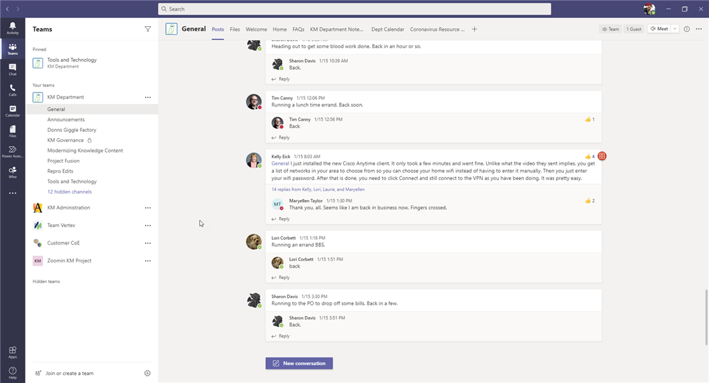

Microsoft Teams is a communication and knowledge sharing hub. Some features and components include:
Channels
Conversations
OneNote notebooks
Document library
Here is a look at the Teams site (click here for an interactive tour of the site):

Additional resources
The following resources are available to learn more about Microsoft Teams:
Microsoft Teams technical documentation (Microsoft documentation)
Microsoft Teams help & learning (Microsoft documentation)
End user training for Microsoft Teams (Microsoft documentation)
Microsoft Teams videos (Knowledge Management Vimeo playlist)
Related topics